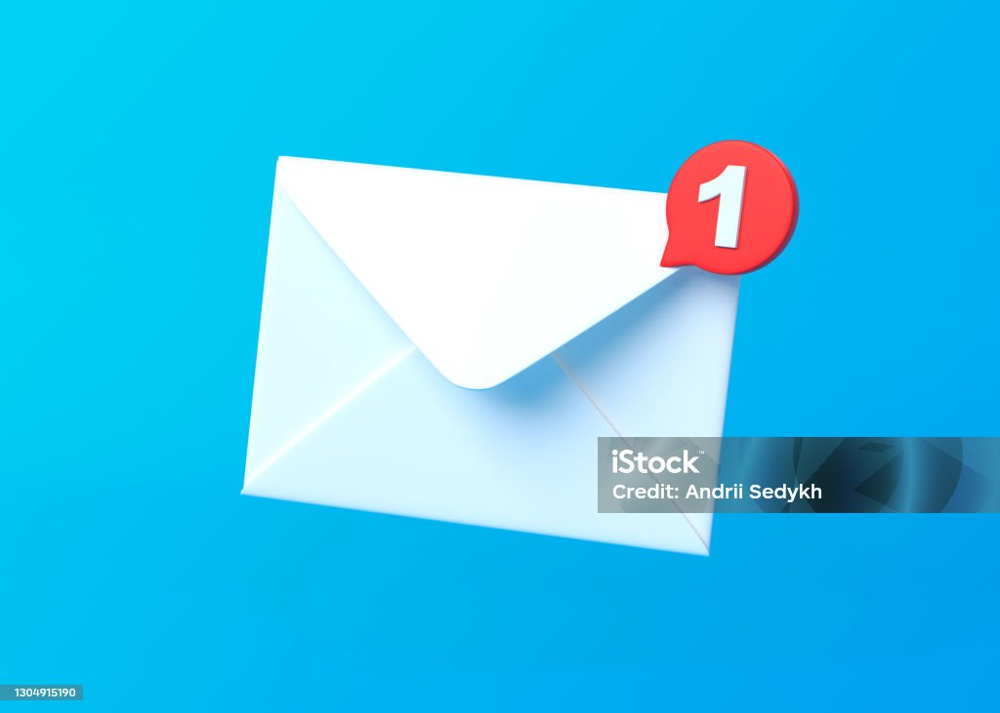

| |
 namhuyen42003@gmai.com | |
|
|---|
University of Information Technology(UIT)
8/2018-6/2023
Information Technology: Software Engineering
-GPA:3.0/4
Version Control: Git
Programming Languages: HTML,CSS,Javascrips,C#
Library/Framework:Spring MVC,Spring Boot
RDBMS MYSQL,MSSQL,Postgresql
Other Jiar,Docker,Apache Kafka,Kong GW, Sonar Qube,Liquibas
AMERICAN CODE LAB 8/2022 - 10/2023
Technical Instructor
AMERICAN CODE LAB 8/2021-8/2022
Full Stack Developer
Web Front-End Development 6/2021
Professional Full Stack Programming(advanced) 10/2021
e-VVM
(02/2023-NOW)
| Customer | American Code Lab |
|---|---|
| Description | e-VVm(Virtual Visual Managermetn) is a custom wed application,supports to mamnager work progress and visualize information for team's open workplace. Track daily activities(in DSTUM meeting) via KanBan board in real-time Monitor project progress by different types of charts: GANTT Chart, Team Capacity,Burndown Chart... Collaborate by mutualizing team members across multiple engagements. |
| Team scale | 10 |
| My position | Full Stack Developer |
| Responsibilities |
|
| Technologies | Java,Spring Boot, Javascript,ReactJs,Flus,Postgresl. |
e-VVM
(02/2023-NOW)
| Customer | American Code Lab |
|---|---|
| Description | e-VVm(Virtual Visual Managermetn) is a custom wed application,supports to mamnager work progress and visualize information for team's open workplace. Track daily activities(in DSTUM meeting) via KanBan board in real-time Monitor project progress by different types of charts: GANTT Chart, Team Capacity,Burndown Chart... Collaborate by mutualizing team members across multiple engagements. |
| Team scale | 10 |
| My position | Full Stack Developer |
| Responsibilities |
|
| Technologies | Java,Spring Boot, Javascript,ReactJs,Flus,Postgresl. |